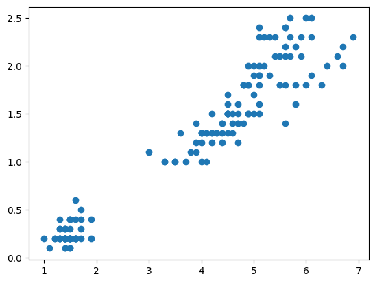
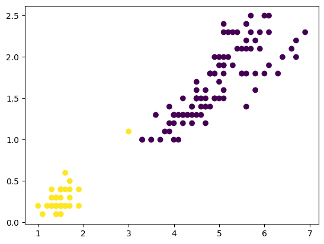
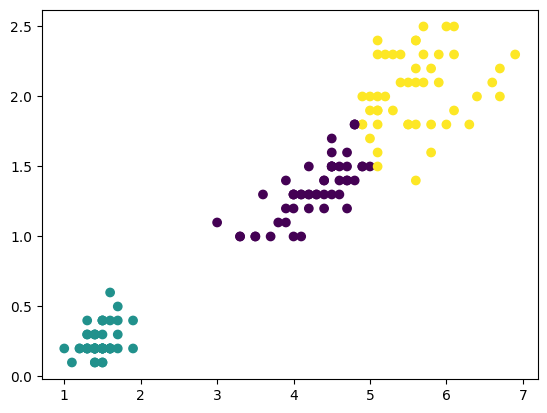
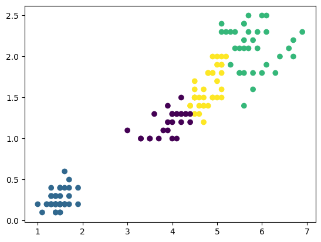
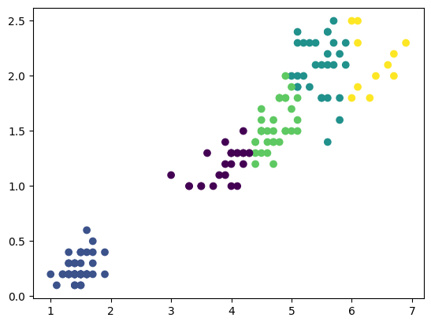
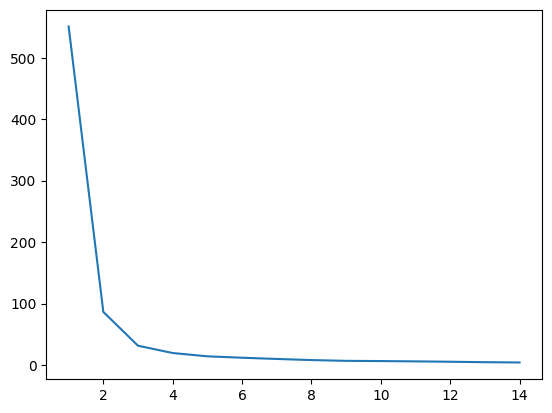
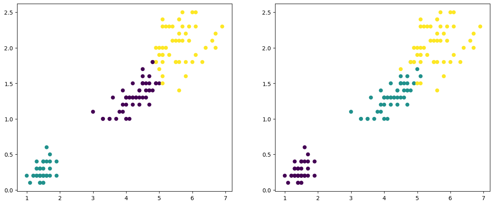
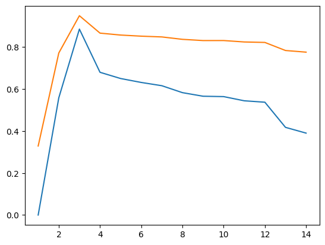
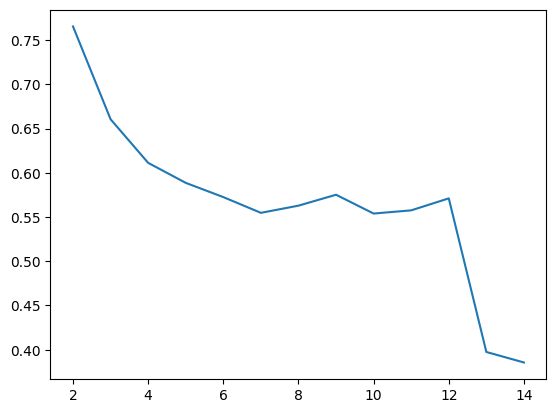

Aprendizado Não Supervisionado#
Falamos da parte teórica do K-Means na última aula
Agora vamos para a parte prática utilizando um dataset que já conhecemos, o dataset iris
Importando o dataset iris
# Importando o dataset iris
from sklearn.datasets import load_iris
X,y = load_iris(return_X_y=True,as_frame=True)
# Ignorando avisos de depreciação
import warnings
warnings.filterwarnings('ignore')
X.head(3)
| sepal length (cm) | sepal width (cm) | petal length (cm) | petal width (cm) | |
|---|---|---|---|---|
| 0 | 5.1 | 3.5 | 1.4 | 0.2 |
| 1 | 4.9 | 3.0 | 1.4 | 0.2 |
| 2 | 4.7 | 3.2 | 1.3 | 0.2 |
# Selecionando apenas as colunas de pétala
X = X.loc[:,['petal length (cm)','petal width (cm)']]
Visualizando graficamente os pontos
# Visualizando graficamente os pontos
import matplotlib.pyplot as plt
fig, ax = plt.subplots()
ax.scatter(X['petal length (cm)'], X['petal width (cm)'])
plt.show()

Utilizando o K-means
# Importando o KMeans
from sklearn.cluster import KMeans
# Utilizando o algoritmo
kmeans2 = KMeans(n_clusters=2, random_state=0).fit(X)
# Verificando quais foram os labels determinados pelo k-means
kmeans2.labels_
array([1, 1, 1, 1, 1, 1, 1, 1, 1, 1, 1, 1, 1, 1, 1, 1, 1, 1, 1, 1, 1, 1,
1, 1, 1, 1, 1, 1, 1, 1, 1, 1, 1, 1, 1, 1, 1, 1, 1, 1, 1, 1, 1, 1,
1, 1, 1, 1, 1, 1, 0, 0, 0, 0, 0, 0, 0, 0, 0, 0, 0, 0, 0, 0, 0, 0,
0, 0, 0, 0, 0, 0, 0, 0, 0, 0, 0, 0, 0, 0, 0, 0, 0, 0, 0, 0, 0, 0,
0, 0, 0, 0, 0, 0, 0, 0, 0, 0, 1, 0, 0, 0, 0, 0, 0, 0, 0, 0, 0, 0,
0, 0, 0, 0, 0, 0, 0, 0, 0, 0, 0, 0, 0, 0, 0, 0, 0, 0, 0, 0, 0, 0,
0, 0, 0, 0, 0, 0, 0, 0, 0, 0, 0, 0, 0, 0, 0, 0, 0, 0], dtype=int32)
# Visualizando graficamente
fig, ax = plt.subplots()
ax.scatter(X['petal length (cm)'], X['petal width (cm)'],c=kmeans2.labels_)
plt.show()

E se usarmos k = 3? E k = 4? E 5?…
# Utilizando k = 3
kmeans3 = KMeans(n_clusters=3, random_state=0).fit(X)
# Verificando quais foram os labels determinados pelo k-means
kmeans3.labels_
array([1, 1, 1, 1, 1, 1, 1, 1, 1, 1, 1, 1, 1, 1, 1, 1, 1, 1, 1, 1, 1, 1,
1, 1, 1, 1, 1, 1, 1, 1, 1, 1, 1, 1, 1, 1, 1, 1, 1, 1, 1, 1, 1, 1,
1, 1, 1, 1, 1, 1, 0, 0, 0, 0, 0, 0, 0, 0, 0, 0, 0, 0, 0, 0, 0, 0,
0, 0, 0, 0, 0, 0, 0, 0, 0, 0, 0, 2, 0, 0, 0, 0, 0, 2, 0, 0, 0, 0,
0, 0, 0, 0, 0, 0, 0, 0, 0, 0, 0, 0, 2, 2, 2, 2, 2, 2, 0, 2, 2, 2,
2, 2, 2, 2, 2, 2, 2, 2, 2, 0, 2, 2, 2, 2, 2, 2, 0, 2, 2, 2, 2, 2,
2, 2, 2, 2, 2, 2, 0, 2, 2, 2, 2, 2, 2, 2, 2, 2, 2, 2], dtype=int32)
kmeans3.inertia_
31.371358974358973
# Visualizando graficamente
fig, ax = plt.subplots()
ax.scatter(X['petal length (cm)'], X['petal width (cm)'],c=kmeans3.labels_)
plt.show()

# Utilizando k = 4
kmeans4 = KMeans(n_clusters=4, random_state=0).fit(X)
kmeans4.labels_
array([1, 1, 1, 1, 1, 1, 1, 1, 1, 1, 1, 1, 1, 1, 1, 1, 1, 1, 1, 1, 1, 1,
1, 1, 1, 1, 1, 1, 1, 1, 1, 1, 1, 1, 1, 1, 1, 1, 1, 1, 1, 1, 1, 1,
1, 1, 1, 1, 1, 1, 3, 3, 3, 0, 3, 3, 3, 0, 3, 0, 0, 0, 0, 3, 0, 3,
3, 0, 3, 0, 3, 0, 3, 3, 0, 3, 3, 3, 3, 0, 0, 0, 0, 3, 3, 3, 3, 0,
0, 0, 0, 3, 0, 0, 0, 0, 0, 0, 0, 0, 2, 3, 2, 2, 2, 2, 3, 2, 2, 2,
3, 2, 2, 3, 2, 2, 2, 2, 2, 3, 2, 3, 2, 3, 2, 2, 3, 3, 2, 2, 2, 2,
2, 3, 2, 2, 2, 2, 3, 2, 2, 2, 3, 2, 2, 2, 3, 3, 2, 3], dtype=int32)
kmeans4.inertia_
19.477123363965475
# Visualizando graficamente
fig, ax = plt.subplots()
ax.scatter(X['petal length (cm)'], X['petal width (cm)'],c=kmeans4.labels_)
plt.show()

# Utilizando k = 5
kmeans5 = KMeans(n_clusters=5, random_state=0).fit(X)
# Visualizando graficamente
fig, ax = plt.subplots()
ax.scatter(X['petal length (cm)'], X['petal width (cm)'],c=kmeans5.labels_)
plt.show()

Podemos então utilizar o “Método do Cotovelo (Elbow Method)” para determinar o melhor valor de k
# Percorrendo diferentes valores de K
valores_k = []
inercias = []
for i in range(1,15):
kmeans = KMeans(n_clusters=i,random_state=0).fit(X)
valores_k.append(i)
inercias.append(kmeans.inertia_)
# Visualizando a relação entre inércia e K
fig, ax = plt.subplots()
ax.plot(valores_k,inercias)
plt.show()

Podemos utilizar o K sugerido acima e avaliar os modelos
# Podemos visualizar o target e os labels em um mesmo gráfico
fig, ax = plt.subplots(ncols=2,figsize=[15,6])
ax[0].scatter(X['petal length (cm)'], X['petal width (cm)'],c=kmeans3.labels_)
ax[1].scatter(X['petal length (cm)'], X['petal width (cm)'],c=y)
<matplotlib.collections.PathCollection at 0x13ae5ca9810>

Índice Rand
https://scikit-learn.org/stable/modules/clustering.html#rand-index
mede a semelhança de classe entre 2 pontos
Depende de termos os rótulos / labels
Onde:
a: número de pares que pertencem a mesma classe e ao mesmo cluster
b: número de pares que pertencem a classes diferentes e a clusters diferentes
c: número de pares que pertencem a mesma classe e a clusters diferentes
d: número de pares que pertencem a classes diferentes e ao mesmo cluster
O Índice Rand tem alguns problemas como ter valores altos mesmo para dados aleatórios e aumentar a medida que aumentamos o número de grupos. Para resolver utilizamos o Índice Rand Ajustado, onde:
Para uma clusterização aleatória, seu valor é 0
O máximo é 1
Valores negativos representam clusterizações piores que escolher de forma aleatória os clusters
# Verificando o adjusted_rand_score para k = 2
from sklearn import metrics
metrics.adjusted_rand_score(y,kmeans2.labels_)
0.5583714437541352
# Para k = 3
metrics.adjusted_rand_score(y,kmeans3.labels_)
0.8856970310281228
# k = 4
metrics.adjusted_rand_score(y,kmeans4.labels_)
0.6799548800041489
# Podemos percorrer os valores de k calculando esses dois indicadores
valores_k = []
ARI = []
RI = []
for i in range(1,15):
kmeans = KMeans(n_clusters=i,random_state=0).fit(X)
valores_k.append(i)
RI.append(metrics.rand_score(y,kmeans.labels_))
ARI.append(metrics.adjusted_rand_score(y,kmeans.labels_))
# E visualizar graficamente como ele se comporta para cada valor de k
fig, ax = plt.subplots()
ax.plot(valores_k, ARI)
ax.plot(valores_k, RI)
plt.show()

“Coeficiente Silhueta”
https://scikit-learn.org/stable/modules/clustering.html#silhouette-coefficient
Quanto maior esse coeficiente, mais bem definidos são os clusters do modelo
Vamos considerar 2 pontuações
a: A distância média entre uma amostra e todos os outros pontos da mesma classe
b: A distância média entre uma amostra e todos os outros pontos no outro cluster mais próximo
Ele avalia tanto a distância intracluster (o quanto os pontos estão afastados dentro do próprio cluster) quando a distância interclusters (o quanto os clusters estão afastados entre si)
O coeficiente para o conjunto de amostras é dado utilizando a média desse coeficiente para cada amostra
# Verificando o silhouette_score para k = 2
metrics.silhouette_score(X,kmeans2.labels_)
np.float64(0.7653904101258123)
# E para k = 3
metrics.silhouette_score(X,kmeans3.labels_)
np.float64(0.6604800083974887)
# Percorrendo para diferentes valores de k
valores_k = []
s = []
for i in range(2,15):
kmeans = KMeans(n_clusters=i,random_state=0).fit(X)
valores_k.append(i)
s.append(metrics.silhouette_score(X,kmeans.labels_))
# E visualizando graficamente
fig, ax = plt.subplots()
ax.plot(valores_k,s)
plt.show()

Pelas métricas, o melhor resultado foi obtido fazendo K = 2. Então esse é o melhor valor de k?
Isso é apenas um direcionamento, porém o que é mais importante é conhecermos o negócio!